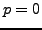
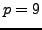
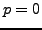
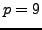

We propose an algebraic multigrid (AMG) method for systems discretized by
high order  (curl) elements. Standard AMG methods perform poorly on
these problems because of the large null space of the curl operator. We
use hierarchical high order
(curl) elements. Standard AMG methods perform poorly on
these problems because of the large null space of the curl operator. We
use hierarchical high order  (curl) conforming elements. Our algorithm
combines ideas from -multigrid and AMG for edge elements to obtain a
high order AMG method. The initial levels in our hierarchy are
constructed by discretizing the problem for decreasing orders of .
Since we use a hierarchical basis, the integrid transfer operators are
trivial. To address complexity issues, we do not visit every in our
hierarchy. After  is reached, we apply smoothed aggregation AMG for
edge elements. We conclude with numerical results for the proposed AMG
algorithm applied to the 2D eddy current problem for bases up to order
.
(curl) conforming elements. Our algorithm
combines ideas from -multigrid and AMG for edge elements to obtain a
high order AMG method. The initial levels in our hierarchy are
constructed by discretizing the problem for decreasing orders of .
Since we use a hierarchical basis, the integrid transfer operators are
trivial. To address complexity issues, we do not visit every in our
hierarchy. After  is reached, we apply smoothed aggregation AMG for
edge elements. We conclude with numerical results for the proposed AMG
algorithm applied to the 2D eddy current problem for bases up to order
.